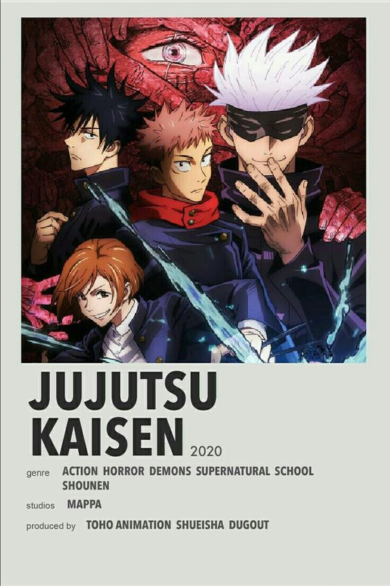

Top 5 best animes to watch
I-Attack on Titan

"Attack on Titan" is a gripping anime and manga series set in a world where humanity is on the brink of extinction due to giant humanoid creatures
known as Titans. These Titans devour humans indiscriminately, driving survivors to seek refuge within enormous walled cities.
The story follows Eren Yeager and his friends Mikasa Ackerman and Armin Arlert as they join the military to fight against the Titans and uncover
the mysteries behind their existence.Filled with intense action, complex characters, and political intrigue,"Attack on Titan" explores themes of survival,
sacrifice, and the consequences of war in a dystopian landscape. As the protagonists confront the terrifying Titans and unravel the secrets of their world,
they face not only external threats but also internal conflicts and moral dilemmas that test their resolve and humanity.
II-Demons Slayer

"Demon Slayer" is a popular Japanese manga and anime series that follows Tanjiro Kamado, a young boy who becomes a demon slayer
after his family is slaughtered by demons, and his sister Nezuko is turned into one. Tanjiro embarks on a quest to avenge his family and find a cure
for his sister's condition. Along the way, he joins forces with other demon slayers, including the hot-headed Inosuke Hashibira and the cowardly Zenitsu
Agatsuma. Set in a fantastical version of Japan during the Taisho era, "Demon Slayer" features breathtaking animation, intense battles, and heartwarming
character development. With its compelling story, rich world-building, and memorable characters, "Demon Slayer" has captivated audiences worldwide and become
a cultural phenomenon.
III-Jujutsu Kaisen

"Jujutsu Kaisen" is a thrilling manga and anime series centered around Yuji Itadori, a high school student with immense physical strength and
a sense of justice. After a chance encounter with cursed objects known as "Sukuna's Fingers," Yuji becomes entangled in the world of Jujutsu Sorcerers
, who hunt and exorcise curses. He joins Tokyo Metropolitan Curse Technical College to learn how to control cursed energy and protect humanity.
Alongside his classmates, including the stoic Fushiguro and the eccentric Nobara, Yuji battles powerful curses while uncovering dark secrets within
the Jujutsu world. With its dynamic fight scenes, engaging characters, and supernatural elements, "Jujutsu Kaisen" has quickly risen to prominence
as a must-watch series in the anime community.
IV-Tokyo Ghoul

"Tokyo Ghoul" is a dark and gripping manga and anime series set in an alternate Tokyo where ghouls, humanoid creatures who consume human flesh,
lurk in the shadows. The story follows Ken Kaneki, a college student who, after a chance encounter with a ghoul, becomes half-ghoul himself during
a life-saving surgery. Struggling to navigate his new existence, Ken grapples with his identity while trying to find a place in both human and ghoul
societies. As he delves deeper into the ghoul world, Ken encounters factions, battles, and moral dilemmas that challenge his perception of right and
wrong. With its intense action, psychological depth, and exploration of existential themes, "Tokyo Ghoul" captivates audiences with its dark and
thought-provoking narrative.
V-Blue Lock

"Blue Lock" is a captivating manga series that blends the intensity of sports with the drama of competition. Set in a world where Japan's soccer team
struggles on the global stage, a mysterious organization known as Blue Lock emerges with a radical plan to cultivate elite strikers.
The story follows Yoichi Isagi, a talented but overlooked player, as he is recruited into the cutthroat training program alongside other promising
young forwards. With high stakes and fierce rivalries, Isagi and his teammates must navigate a complex web of challenges, both on and off the field,
as they strive to become the nation's next soccer superstars. "Blue Lock" offers thrilling soccer action, strategic gameplay,
and compelling character development that keeps readers on the edge of their seats.